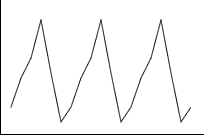

If you don't want to print now,
Time series data
Data sets whose measurements are made sequentially at regular intervals are called time series. We often want to forecast future values of a time series.
The importance of plotting
As with other data structures, the information in a time series is most easily understood from a graphical display. A time series plot is a type of scatterplot whose horizontal axis shows the time-ordering of the values. Successive crosses are often joined by lines.
Types of pattern
| Trend | Seasonal variation |
|---|---|
Trend refers to long-term increases and decreases in the values.
 |
This is often evident in monthly or quarterly data and refers to a pattern
that is repeated each year.
 |
| Cyclic variation (autocorrelation) | Random fluctuations |
|---|---|
This arises when values are similar to adjacent values,
making irregular waves or cycles .
 |
These are 'ups and downs' in a time series that do not correspond to trend, seasonal variation or autocorrelation.
 |
Most time series show more than one of these patterns to some degree.
Displaying several time series on the same plot
Several related time series can be superimposed with different colours on the same display, making comparisons easier. The crosses may be omitted.

Smoothing
Random fluctuations in a time series are usually noise that can obscure trend and other signal in the series. The values can be smoothed to reduce these random fluctuations and show the systematic movement in the series more clearly.
smoothed value = centre ( original value and adjacent values )
Moving averages
A 3-point moving average replaces the value at time i by

Moving averages are also called running means. In the example below, a 7-point moving average replaces each value with the mean of it and the 3 adjacent values on each side.

The more adjacent values used, the greater the smoothing.
Ends of the series
Note that moving averages cannot be used to smooth the values at the two ends of the time series.
Moving average with odd and even run lengths
A moving average provides a smoothed value at the middle of the times of the values being averaged.

If averaging over an even number of values, the smoothed value is for a time between those of the data values, such as "year 2005.5".
A second stage of averaging for even run lengths
To provide smoothed values at the same times as the raw data, we often take a further 2-point moving average.

This is equivalent to giving half weight to the two outermost values. If based on moving averages of 4, this is called a 4-point centred moving average.
These centred averages are particularly useful when analysing seasonal data. For example, 12-point centred moving averages are often used for monthly data.
Outliers and running medians
Since medians are less sensitive to outliers than means, a more robust alternative to running means replaces each value by the median of it and adjacent values. A 3-point running median is:

and higher-order running medians will use more adjacent values.
Comparison of means and medians

Running medians, followed by moving averages
To take advantage of the best features of both moving averages and running medians, these two techniques are often applied sequentially.
Smoothing up to the end of the series
We are usually most interested in the latest values in a time series, but moving averages cannot provide smoothed values at the two ends of the time series. Exponential smoothing works up to the end of the series:


where the smoothing constant, a, is a value between 0 and 1. The smoothed value is a 'weighted average' of the actual value at that time and the previous smoothed value.
Alternative formula
The formula can also be expressed as

For example, if a = 1/2 ,

The smoothed value puts more weight on the recent past (which is an intuitively sensible thing to do).
Forecasting future values
If the most recent value is at time i, we forecast the value at time i + k to be the last exponentially smoothed value,

Time series with trend
If the time series has an increasing trend, exponential smoothing will tend to underestimate the trend. Similarly, the smoothed series will be too high if there is a decreasing trend.

Do not use exponential smoothing on a time series with trend.